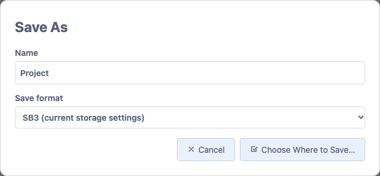
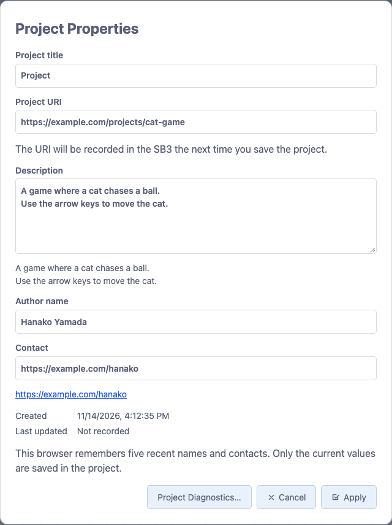
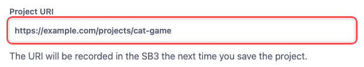
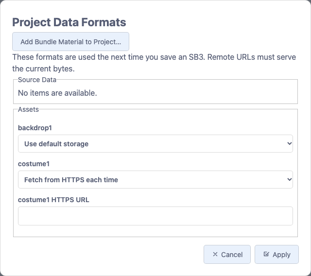
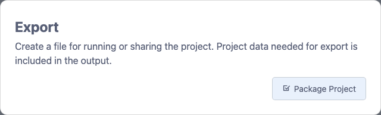

Feature guide 10/12 · Updated November 14, 2026
Save and distribute
Save your project, record project information, decide where extension code and assets are kept, and hand the project over as an SB3 or a single HTML file.
10.1 Choose between Save and Save as
"File" → "Save Project" overwrites the open SB3 or project folder with the whole project. A new project, or one you saved by downloading, has nothing to overwrite, so this item is unavailable. If you edited a text file in the folder on its own, use "Save file" in that tab.
What ⌘S (Ctrl+S on Windows) does depends on the panel open at the left edge. With "Sprites" it is assigned to "Save Project", and with "Project folder" it is assigned to "Save Active Tab"; the File menu shows the shortcut next to that item. If no savable tab is selected in "Project folder", pressing the shortcut saves nothing.
The * mark for unsaved changes
When you edit a project and have unsaved changes, a * appears to the right of the project title in the menu bar and after the names of tabs you are editing, such as sprites. Clicking the * next to the title shows the save actions available at that moment, such as "Save Project" and "Save As…". The * disappears when you save.
Save under a new name
"File" → "Save As…" saves the project with the name and save format you choose.

| Save format | What is saved |
|---|---|
| SB3 (current storage settings) | Saves with the storage formats chosen in "Project Data…" and "Extensions…" |
| SB3 (embed configured scripts and assets) | Saves YAML scripts (such as Kamishibai YAML scripts) and assets that are set to HTTPS references and the like inside the SB3. Use it to make an SB3 for continuing to edit locally |
| Project folder | Creates a project folder in the folder you choose, saves to it and opens it. Shown in browsers that can choose folders, such as Chrome and Edge. Existing content in the folder is overwritten |
- When you choose where to save an SB3. The file you chose becomes the target of later "Save Project" overwrites. If you cancel choosing a location, the previous target stays.
- When you download an SB3. No target is set, and "Save Project" stays unavailable.
- When a project folder is open. "Save Project" updates the project folder. Not only blocks but also variables, sprite positions and sizes, and added or deleted sprites, costumes and sounds are saved. Making an SB3 with "Save As…" disconnects the project from the project folder.
10.2 Restore a project from a restore point
If saving fails or you forget to save, open "File" → "Restore Points". You can restore the project from restore points that TurboWarp records in the browser at regular intervals. Choose the interval from five steps between "every minute" and "every 30 minutes", or "never".
Restore points are a last resort and can disappear. Keep your project by saving it.
10.3 Record project information in the SB3
"File" → "Project Properties" lets you record the project's title, description and author.
- Fill in "Project title", "Description", "Author name" and "Contact". The description can span several lines.
- Click "Apply" to apply the information to the current project; the project title in the menu bar changes too. Click "Cancel" to discard your changes and close.
- Save from the "File" menu to record the information in the project file.

Choose the author name and contact from the history
The browser remembers up to five recent author names and contacts that you applied. Using a value again moves it to the top of the history, and you can edit a suggestion you pick. Only the values applied this time go into the SB3. If browser storage is unavailable, the history is available only while the editor is open.
An email address or mailto: address entered as the contact becomes an email link, and an https: address becomes a web page link, shown below the field. Email links open in your mail app, and web page links open in a new tab. Enter the description as plain text. In the preview below the field, HTTPS URLs can be opened as links.
Dates and saving to the SB3
The creation and last-updated dates are recorded automatically. A new project gets a creation date, and projects without date information show "Not recorded". The last-updated date is updated when a project file containing changes, such as to project information or blocks, is saved successfully.
pick from history or enter new
to the current project
record info and update date
title and info restored
This information is saved in the SB3 as Plus-specific project information. The author name and contact are visible to anyone who receives the SB3. Saving again in standard Scratch or TurboWarp, or in an editor with project information disabled, may remove the Plus-specific information, so keep the original SB3. For the storage details, see the project information and diagnostics specification.
10.4 Set the project URI to keep caches separate
In "File" → "Project Properties", enter an HTTPS address that identifies the project in "Project URI", then click "Apply". Addresses containing a user name or password, or a fragment after #, cannot be used. The applied URI is recorded in the SB3 the next time you save the project.

For extensions that keep a cache per project, changing the URI makes later writes use the new URI. Changing the URI does not delete the cache; the earlier cache stays as it is. The cache is stored in the browser.
10.5 Choose the storage format for extension code
To add an extension, click "File" → "Extensions…" → "Add Extension" and choose the extension from the "TurboWarp Plus" list. With each extension's "Where it loads from", choose whether its code goes into the project or is fetched from an HTTPS server (the storage format of the extension code). When you click "Add" and then save the SB3, the chosen storage format, a SHA-256 for checking the code, and the run conditions are recorded.
| Where it loads from (when adding) | Shown in "Extensions…" | What is saved and what happens on opening |
|---|---|---|
Keep a copy (default)remote-cacheable | Fetch from HTTPS, caching allowed | Records the HTTPS URL. If the person opening the project allows it, the verified code is stored in the browser and reused. |
Fetch each timeremote-non-cacheable | Fetch from HTTPS each time | Records the HTTPS URL. The code is fetched and verified every time the project opens, and nothing is left in the browser. |
In the projectembedded-file | File in the SB3 | Bundles the code as a file inside the SB3. |
In the project, as a data addressembedded-data | Data in the project JSON | Bundles the code in the project data as a data URL. Standard TurboWarp can also load code in this form. |
Change the storage format of an extension you already added
Open "File" → "Extensions…" to see the current storage format of each extension used in the project. For extensions with a recorded source URL, you can choose the storage format again. After choosing, click "Apply Storage Settings" and save the SB3. A project that uses no extensions shows "No extensions in use."
Keep a copy / Fetch each time
SB3: URL + hash
verify the content
In the project (including as a data address)
SB3: code + hash
verify the content
With storage formats that fetch from a server, verification fails if the content changes, even when the URL stays the same. Whether the project opens without a network depends on whether the code and data it needs are available locally. Even with bundled code, an extension that fetches external APIs or images needs a network.
To keep caches separate for each project, use the project URI. For detailed constraints and compatibility, see the SB3 save format and the extension list specification.
10.6 Choose the storage format for source data and assets
Open "File" → "Project Data…" to show "Project Data Formats". In the "Assets" section, choose a storage format for each asset, such as backdrops, costumes and sounds. If the project contains source data that applies, such as YAML for a supported extension, it is also listed in the "Source Data" section. When you choose a storage format that fetches from HTTPS, an "HTTPS URL" field appears for that item; enter the URL there. The content fetched from the URL must match the current data byte for byte.

| Item shown on screen | When to use it |
|---|---|
| Use default storage | Clears the setting for that item and saves it the default way |
| Fetch from HTTPS, caching allowed | If the person opening the project allows it, the verified data is stored in the browser and reused |
| Fetch from HTTPS each time | Fetches from the server every time the project opens |
| File in the SB3 | Hands the data over as a separate file inside the project |
| Data in the project JSON | Stores the data directly in the project's JSON |
Click "Apply" and save the SB3. The chosen storage formats are used from the next save. If you need a one-off SB3 with the HTTPS-referenced items bundled in, choose "SB3 (embed configured scripts and assets)" in Save As. To read back data stored in the chosen storage formats, use an editor with the Plus extension loader enabled. When you open a project with HTTPS references, a list of the sources is shown and you can choose whether to allow fetching. The storage format of the extension programs themselves is covered in Choose the storage format for extension code.
10.7 Export a project as a single HTML file
Open "File" → "Export…" and click "Package Project". The project data needed for export is bundled into the output. For an ordinary Scratch 3 or TurboWarp project, the standard TurboWarp Packager opens in a new tab with the project loaded. For a project that records Plus-style extensions, the same action opens the Plus-specific output page instead.

- On the Plus output page, make sure that none of the Plus extensions depend on external APIs, models, images, audio and the like.
- Check the confirmation box and click the generate button. The page is currently shown only in Japanese, and the button reads 確認してHTMLを生成 (confirm and generate HTML). Extension code served over HTTPS is also put into the HTML after its content is verified. Sandbox settings are carried over as they are.
- Download and open the generated HTML. Extensions that meet the catalog's trust conditions run after being checked against the bundled hashes. For extensions that need individual approval, permission to run is requested each time the HTML is opened.
reviews the needed extensions
A project with no external dependencies works offline. This feature does not collect and bundle external APIs, images, models and the like automatically. In Packager output, text that uses web fonts is shown in the fallback font you specify. For details, see the loader and HTML output specification.